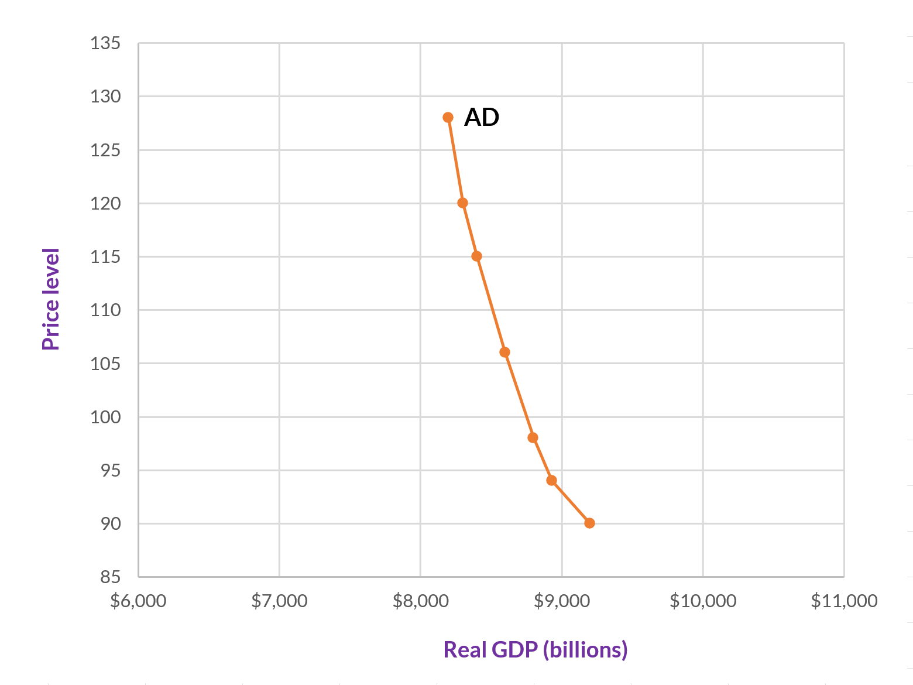
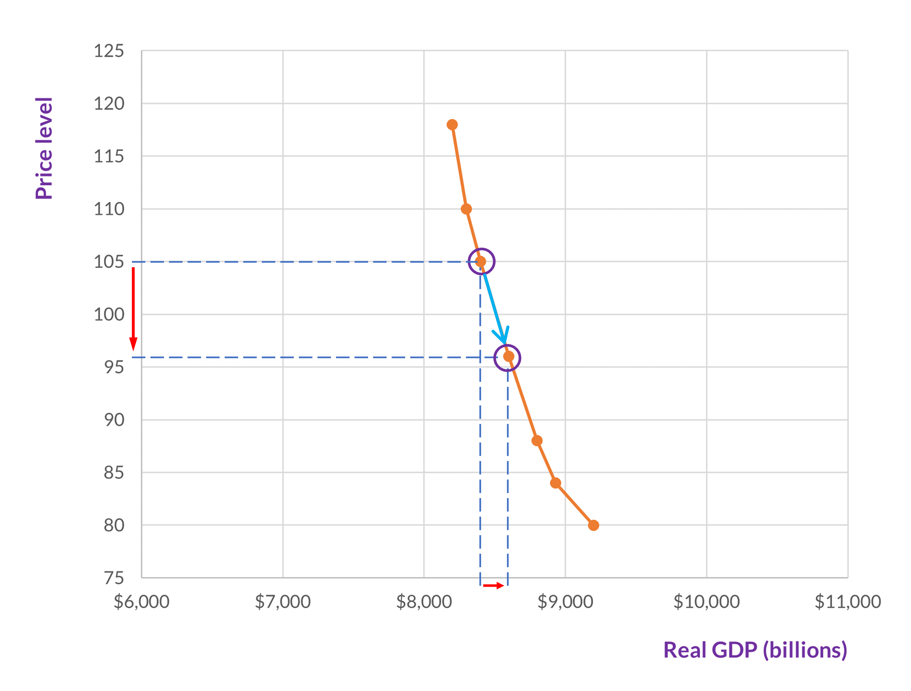
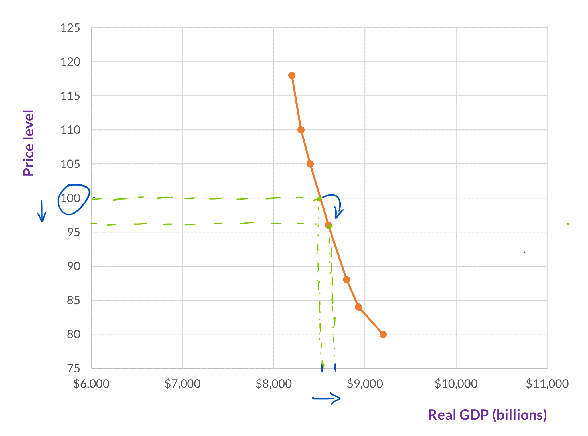
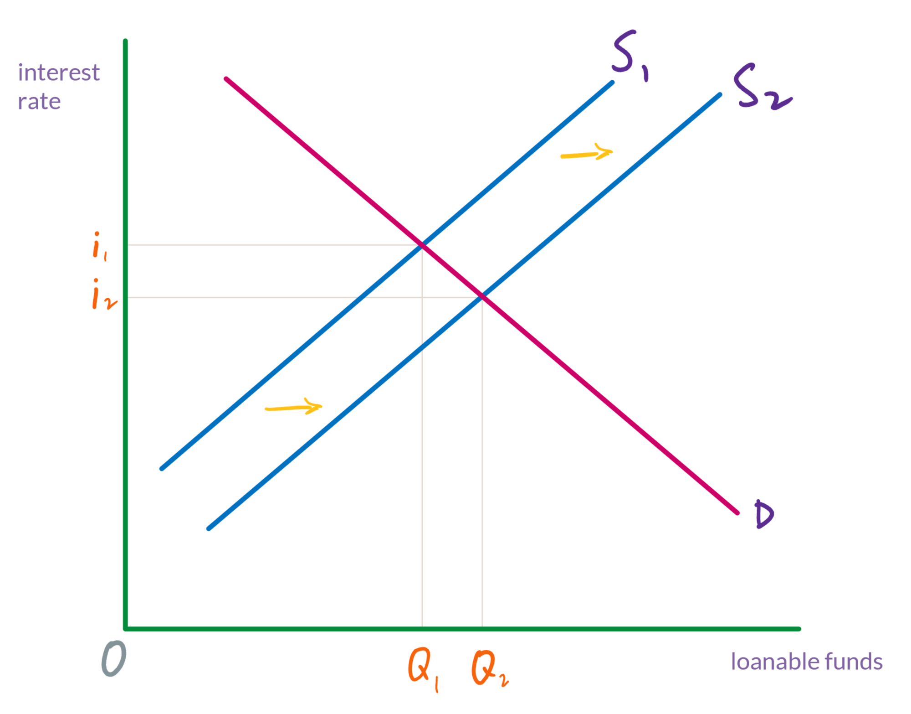
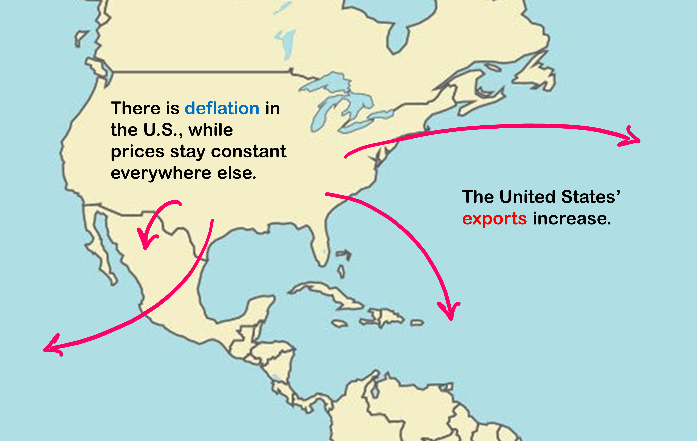
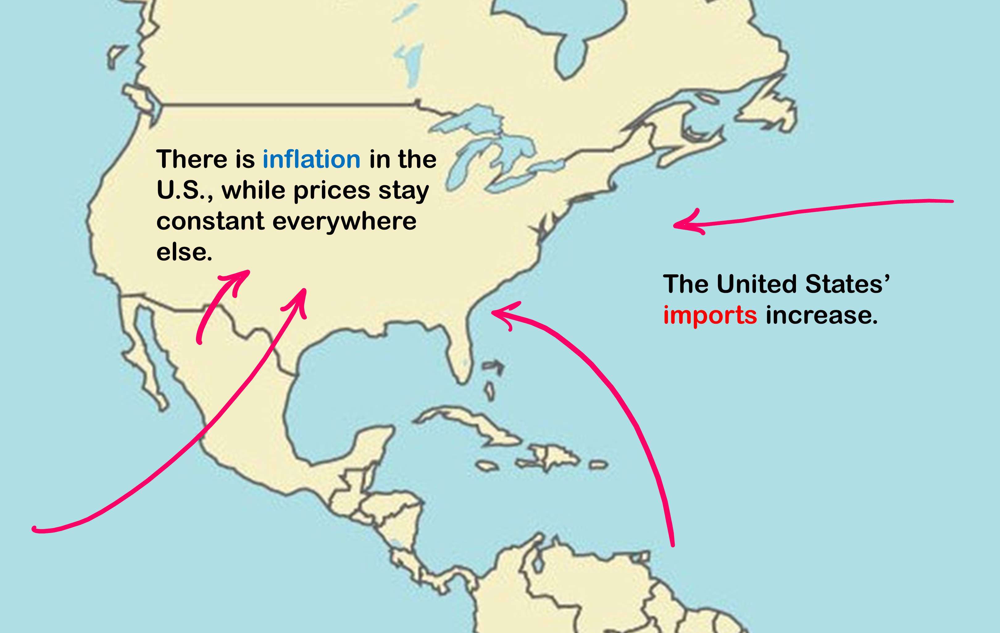

Aggregate demand
A model of the U.S. economy
We have already encountered two economic models: first, rather briefly, the circular flow diagram, which describes the flow of economic activity between households and firms; and second, the supply and demand model, which describes how prices and quantities for a single good or service will change in response to changes to demand or to supply.
Now, we will investigate a model of the entire U.S. economy: the aggregate demand - aggregate supply model (AD-AS model). This is a relatively simple model (and there are many, much more complex models in macroeconomics), but it will give us insight into when and why GDP, the price level, and unemployment increase and decrease.
As the name of the model suggests, the two components that are modeled are aggregate demand and aggregate supply. We will take each in turn, and then put them together.
Aggregate demand
Aggregate demand (AD) is the amount of total spending on domestic goods and services in an economy. When we graph aggregate demand, we put real GDP—or in other words, total output—on the vertical axis. On the vertical axis, we use a price index.
The index is the GDP deflator—which is the price index that goes with GDP. But, for the purpose of understanding this model, we won’t be calculating the GDP deflator, or even referring specifically to it. We will just use index numbers between about 80 and 120 and track changes to the price level. These changes to the price level constitute inflation or deflation. For example, a change from 100 to 105 is a 5% increase in prices (on average); while a change from 100 to 90 is a 10% decrease in prices (on average).

The aggregate demand curve represents the total spending on domestic goods and services at each price level. As such, it includes all four of the components of demand that we covered when discussing GDP: consumption, investment, government spending, and net exports (i.e., exports minus imports).
It is worth keeping in mind that aggregate demand is defined in terms of total spending (which by definition is equal to total output), and for the model that we are developing here, we no longer have the microeconomic focus on individual consumers getting what they want. As you will see once we have a complete picture of the model, our interest is how we can keep GDP close to its potential and unemployment low.
Why does the AD curve slope downward?
The answer to this question is different than—and a little more complicated than—the reason why the demand curve typically slopes downward. Now, we are thinking about why and how changes to the price level (i.e., the index on the vertical axis) affect GDP. Specifically, the reasons why, if everything else is held constant, when the price level falls, GDP increases (and vice versa).
As shown in figure 2, if a decline on the vertical axis causes an increase on the horizontal axis, then the curve must have a negative slope.

There are three ways that GDP is affected by changes to the price level, and these three correspond to three of the components of demand: consumption, investment, and net exports. For the sake of this analysis, we can treat government spending as a constant that is set by government policy and isn’t affected by changes to the price level.
The real wealth effect
As you may know, wealth and income are not the same, a point to which we will return later. Right now, what interests us is income and savings. Let’s say that in your checking and savings accounts, you have a total of $1000. Suddenly, the price level drops from 100 to 96. This means that prices for all goods and services have fallen by 4%. You still have the same $1000, but the real value of this $1000 has increased. Hence, you are wealthier. (Yay!)
The same will be true for all consumers, and this increase in everyone’s wealth will tend to increase the consumer spending portion of GDP (i.e., consumption). Since consumption is a portion of GDP, GDP increases. Hence, we have moved down the aggregate demand curve.

Conversely, if the price level increases—from say, 100 to 104—then the real value of your $1000 will go down. The same will be true for all consumers, which will tend to decrease consumer spending, which will decrease GDP. This will take us to a higher point on the aggregate demand curve.
The interest rate effect
Banking is an interesting service. When we use banks, we are safely storing our money, we are paid for doing so (that is, the bank pays us interest), and we can access it whenever we want (sometimes with some conditions). Banks, however, aren’t charities. They make money. They do so by making loans and charging interest on those loans. (And the bank will receive a higher rate of interest on their loans than they will pay to savers for depositing their money in the bank.)
The more money that savers deposit with a bank, the more loans the bank can make. The less money that savers deposit, the fewer loans the bank can make. This in turn, affects interest rates—both the interest rate that savers receive and the interest rate on loans.
Let’s return to changes to the price level. When the price level goes down, consumers, firms, and government need less money to purchase goods and services. Some of their unspent money will be moved into savings. Hence, the supply of savings (or “loanable funds”) increases.
Just as it does for any market, when supply increases and demand remains the same, the equilibrium price will fall. In the case of savings (i.e., loanable funds), the price is an interest rate, which is paid to savers.

Once they have deposits, banks can use that money to make loans. Now, they are the suppliers of loanable funds, and demand is from individuals or firms (or other kinds of institutions) that need loans. But the effect is the same. The banks’ supply of loanable funds has increased, and so the interest rate for whoever takes out loans decreases.
Lower interest rates will encourage companies to borrow and spend on factories, equipment, and other investment goods. Similarly, consumers will be more likely to borrow and purchase “big ticket” items such as houses and cars (the first of which is included in the investment category of GDP). This spending increases GDP—that is, we have moved down the aggregate demand curve.
Conversely, if the price level increases, then consumers, firms, and the government will need more money to purchase goods and services, leaving less to save. Thus, the supply of loanable funds will decrease, which will cause interest rates to rise. This will decrease borrowing and spending, which will lower GDP—and so we have moved up the aggregate demand curve.
The foreign price effect
When the price level goes down in the United States and it remains unchanged in other countries, then, relative to other countries, U.S. goods and services have gotten cheaper. Therefore, demand for U.S. exports will increase.

On the other hand, if the price level goes up in the U.S. and it remains unchanged in other countries, then consumers and firms in the U.S. will purchase more imported goods and services. When this happens, not much changes as far as consumers in the U.S. are concerned. They are still getting the goods and services that they want. But since aggregate demand is measured as levels of GDP, it is only tracking demand for domestically produced goods and services. Imports, recall, are subtracted from GDP. But also, in the scenario that we are considering here, imports are pushing out demand for the more expensive domestically produced goods and services. Consequently, GDP will decrease.

The shape of the AD curve
These three effects cause the aggregate demand curve to slope downward, but they are not actually thought to be very large effects. This means that a change to the price level does not seem to have too much effect on the quantity of goods and services purchased. This might be what we should expect. For most people, most of their purchases can’t change too much. They still need food, clothing, somewhere to live, and transportation. And, especially if the price level is only changing by a low single digit percentage, most people won’t have too much incentive to make much of a change to the amounts of goods and services that they purchase.
This is not to say that a change to the price level won’t have any effect on aggregate demand. If a change to the price level had no effect on the quantity of goods and services demanded, then the aggregate demand curve would be a vertical line. Because of the real wealth effect, the interest rate effect, and the foreign price effect, it’s not that, but it is a curve with a very steep slope as shown in figure 7.